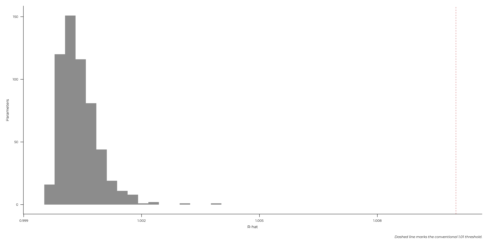
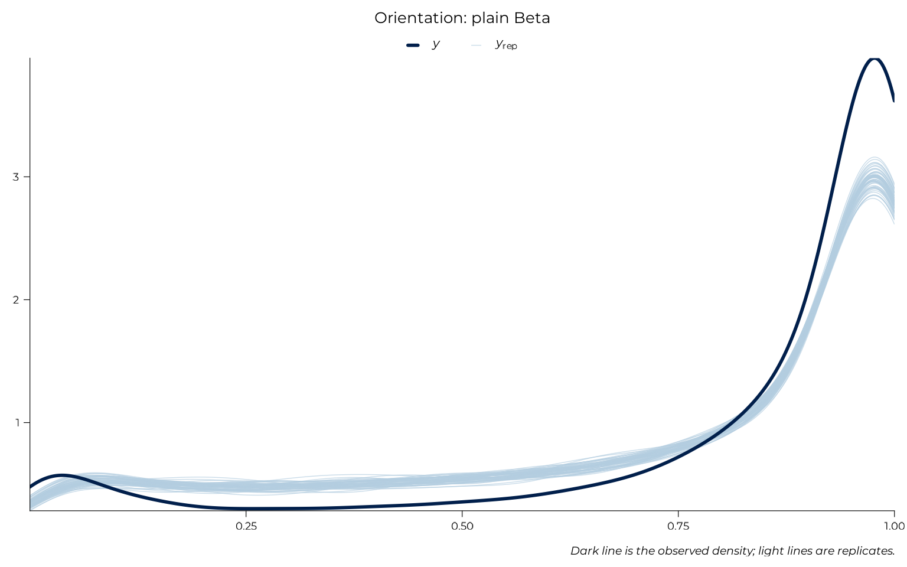
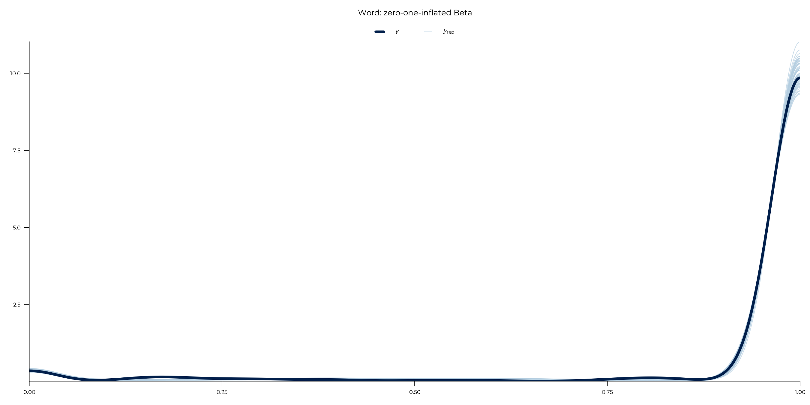
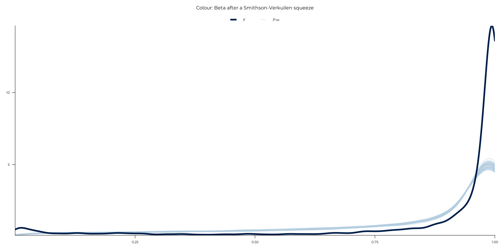
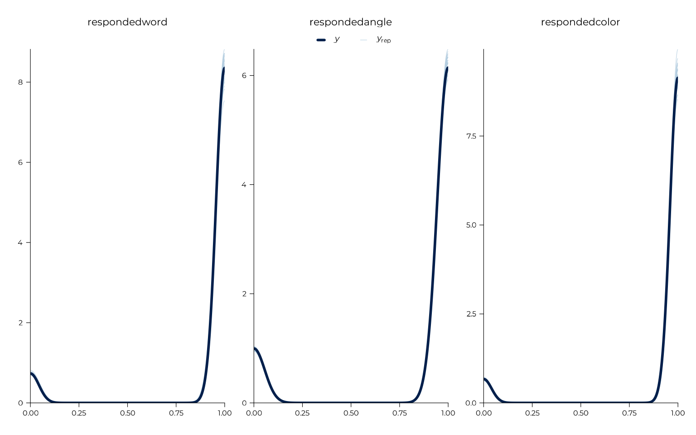
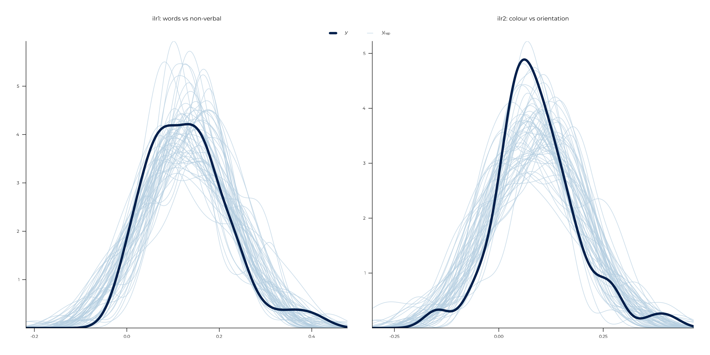

The modelling pages report estimates. This page asks whether the models producing them sampled properly and whether their response families describe the data. Both questions get the space to be checked, because three of the family choices are not obvious. The most complex model in the project, the joint model, is checked first.
v1 <- get_data("v1") |>
dplyr::filter(grepl("^expe_block", expe_phase))
participant_info <- v1 |>
dplyr::summarise(
vviq = dplyr::first(vviq_total_score),
parity_rate = (sum(responded_parity_1) + sum(responded_parity_2)) /
(2 * dplyr::n()),
.by = id
)
model_data <- v1 |>
dplyr::left_join(participant_info, by = "id") |>
dplyr::filter(!is.na(vviq)) |>
dplyr::mutate(
complete_aphant = factor(
dplyr::if_else(vviq == 16, "floor", "above_floor"),
levels = c("above_floor", "floor")
),
score_color = squeeze_boundaries(score_color, n = sum(responded_color))
)
joint_model <- fit_brms_model(
formula = joint_formula(),
data = model_data,
prior = joint_priors(),
# Not the wrapper's defaults of 0.95 and 10: this model was fitted with
# these from the start, for the reason section 1 gives.
adapt_delta = 0.99,
max_treedepth = 15,
file = system.file("models", "joint-full.rds", package = pkg),
file_refit = refit
)1. Convergence
The model was fitted with four chains, 3000 iterations each with the
first 1000 discarded as warmup, giving 2000 kept per chain and 8000
draws in total. fit_brms_model()’s iterations
argument is post-warmup draws per chain rather than a total, which is
why the call reads iterations = 2000, warmup = 1000.
Those draws cover every parameter in the fitted object, which is the count the table below reports. Most of them are the per-participant deviations; the joint model’s structural size is the 54 main parameters: the population-level coefficients, the standard deviations and the fifteen correlations.
tibble::tibble(
parameters = length(brms::rhat(joint_model)),
`max R-hat` = max(brms::rhat(joint_model), na.rm = TRUE),
`R-hat above 1.01` = sum(brms::rhat(joint_model) > 1.01, na.rm = TRUE),
`min bulk ESS ratio` = min(brms::neff_ratio(joint_model), na.rm = TRUE),
`divergent transitions` = sum(
subset(brms::nuts_params(joint_model),
Parameter == "divergent__")$Value),
`max treedepth hits` = sum(
subset(brms::nuts_params(joint_model),
Parameter == "treedepth__")$Value >= 15)
) |>
knitr::kable(digits = 4, caption = "The joint model")| parameters | max R-hat | R-hat above 1.01 | min bulk ESS ratio | divergent transitions | max treedepth hits |
|---|---|---|---|---|---|
| 571 | 1.0038 | 0 | 0.1275 | 0 | 0 |
R-hat below 1.004 everywhere, no divergent transitions, no saturated treedepths, and the worst-sampled parameter still has an effective sample size ratio above 0.12.
That was not guaranteed. A six-response model with fifteen correlated
random intercepts estimated from 86 participants is the kind of model
that diverges, which is why it was fitted with
adapt_delta = 0.99 and max_treedepth = 15 from
the start.
tibble::tibble(rhat = brms::rhat(joint_model)) |>
dplyr::filter(!is.na(rhat)) |>
ggplot(aes(x = rhat)) +
geom_histogram(bins = 40, fill = "grey55") +
geom_vline(xintercept = 1.01, linetype = "dashed", colour = "#C44E52") +
labs(x = "R-hat", y = "Parameters",
caption = "Dashed line marks the conventional 1.01 threshold.")
2. Do the families fit?
The three recall features get three different response families, and the scoring page argues for each from what the boundary of that feature’s scale means.
A posterior predictive check draws replicate datasets from the fitted model and compares them to the real one. If the chosen family is wrong, the replicates look wrong in a visible way.
brms::pp_check(joint_model, resp = "scoreangle", ndraws = 60) +
labs(title = "Orientation: plain Beta",
caption = "Dark line is the observed density; light lines are replicates.") +
theme_pdf(base_size = 16)
Orientation has no boundary mass at all once non-responders are removed, so a plain Beta is unremarkable and the replicates track the observed density closely.
brms::pp_check(joint_model, resp = "scoreword", ndraws = 60) +
labs(title = "Word: zero-one-inflated Beta") +
theme_pdf(base_size = 16)
Word is the interesting one. About 91% of responded word items score exactly 1 and 3% exactly 0, because a recalled word either matches the target or does not. Those are genuine point masses, not rounding, and the inflation components are what let the model put mass exactly there. A plain Beta cannot: it has zero density at both boundaries.
brms::pp_check(joint_model, resp = "scorecolor", ndraws = 60) +
labs(title = "Colour: Beta after a Smithson-Verkuilen squeeze") +
theme_pdf(base_size = 16)
Colour is the case where the same reasoning gives the opposite
answer. It has a trace of mass at 1, but colour score is cosine
similarity on a continuous wheel, so an exact 1 means an error of
exactly zero degrees: pixel resolution, not behaviour. Modelling that
with an inflation component would estimate a process parameter for a
rounding artifact on a couple of dozen items. The squeeze moves every
value by about one ten-thousandth instead, and
squeeze_boundaries() documents the trade.
patchwork::wrap_plots(
purrr::map(
c("respondedword", "respondedangle", "respondedcolor"),
\(response) brms::pp_check(joint_model, resp = response, ndraws = 40) +
labs(title = response) + theme_pdf(base_size = 14)
),
ncol = 3, guides = "collect"
)
The three gates are Bernoulli, where the check reduces to whether the model reproduces the proportion of items answered. It does.
3. The compositional model
The composition page fits both log-ratio coordinates together with the residual correlation estimated, which is what makes the omnibus test invariant to the choice of partition.
composition_data <- compose_features(
dplyr::filter(v1, id %in% engaged_ids(v1)), id
)
composition_data <- composition_data[stats::complete.cases(composition_data), ]
composition_data <- composition_data |>
dplyr::left_join(participant_info, by = "id") |>
dplyr::filter(!is.na(vviq))
composition_data <- dplyr::bind_cols(
composition_data,
ilr_coords(dplyr::select(composition_data, tidyselect::starts_with("part_")))
) |>
dplyr::mutate(
complete_aphant = factor(
dplyr::if_else(vviq == 16, "floor", "above_floor"),
levels = c("above_floor", "floor")
)
)
composition_model <- fit_brms_model(
formula = composition_formula("vviq + complete_aphant + parity_rate"),
data = composition_data,
prior = composition_priors(),
file = system.file("models", "comp-floor.rds", package = pkg),
file_refit = refit
)
tibble::tibble(
`max R-hat` = max(brms::rhat(composition_model), na.rm = TRUE),
`divergent transitions` = sum(
subset(brms::nuts_params(composition_model),
Parameter == "divergent__")$Value),
`min bulk ESS ratio` = min(brms::neff_ratio(composition_model), na.rm = TRUE)
) |>
knitr::kable(digits = 4, caption = "The compositional model")| max R-hat | divergent transitions | min bulk ESS ratio |
|---|---|---|
| 1.0016 | 0 | 0.4486 |
patchwork::wrap_plots(
brms::pp_check(composition_model, resp = "ilr1", ndraws = 60) +
labs(title = "ilr1: words vs non-verbal") + theme_pdf(base_size = 14),
brms::pp_check(composition_model, resp = "ilr2", ndraws = 60) +
labs(title = "ilr2: colour vs orientation") + theme_pdf(base_size = 14),
ncol = 2, guides = "collect"
)
Gaussian is appropriate here: log-ratio coordinates are unbounded by construction. That is the whole point of leaving the simplex, and it is why the composition page can use an ordinary linear model where the accuracy pages cannot.
Continuing through the Extended Online Report: this page follows beyond vividness. To keep reading in order, continue to implementation notes next. Or return to the analysis for what the models were built to do.
#> ─ Session info ───────────────────────────────────────────────────────────────
#> setting value
#> version R version 4.6.1 (2026-06-24)
#> os Ubuntu 22.04.5 LTS
#> system x86_64, linux-gnu
#> ui X11
#> language en
#> collate C.UTF-8
#> ctype C.UTF-8
#> tz UTC
#> date 2026-08-31
#> pandoc 3.8.3 @ /opt/hostedtoolcache/pandoc/3.8.3/x64/ (via rmarkdown)
#> quarto NA
#>
#> ─ Packages ───────────────────────────────────────────────────────────────────
#> ! package * version date (UTC) lib source
#> abind 1.4-8 2024-09-12 [2] CRAN (R 4.6.1)
#> aphantasiaWMStrats * 0.1 2026-08-31 [1] local
#> backports 1.5.1 2026-04-03 [2] CRAN (R 4.6.1)
#> bayesplot 1.16.0 2026-08-25 [2] CRAN (R 4.6.1)
#> bridgesampling 1.2-1 2025-11-19 [2] CRAN (R 4.6.1)
#> brms 2.23.0 2025-09-09 [2] CRAN (R 4.6.1)
#> Brobdingnag 1.2-9 2022-10-19 [2] CRAN (R 4.6.1)
#> bslib 0.12.0 2026-08-04 [2] CRAN (R 4.6.1)
#> cachem 1.1.0 2024-05-16 [2] CRAN (R 4.6.1)
#> checkmate 2.3.4 2026-02-03 [2] CRAN (R 4.6.1)
#> cli 3.6.6 2026-04-09 [2] CRAN (R 4.6.1)
#> coda 0.19-4.1 2024-01-31 [2] CRAN (R 4.6.1)
#> P codetools 0.2-20 2024-03-31 [?] CRAN (R 4.6.1)
#> crayon 1.5.3 2024-06-20 [2] CRAN (R 4.6.1)
#> curl 8.0.0 2026-08-25 [2] CRAN (R 4.6.1)
#> desc 1.4.3 2023-12-10 [2] CRAN (R 4.6.1)
#> digest 0.6.39 2025-11-19 [2] CRAN (R 4.6.1)
#> distributional 0.8.1 2026-06-27 [2] CRAN (R 4.6.1)
#> dplyr 1.2.1 2026-04-03 [2] CRAN (R 4.6.1)
#> emmeans 2.0.4 2026-07-15 [2] CRAN (R 4.6.1)
#> estimability 2.0.0 2026-06-26 [2] CRAN (R 4.6.1)
#> evaluate 1.0.5 2025-08-27 [2] CRAN (R 4.6.1)
#> farver 2.1.2 2024-05-13 [2] CRAN (R 4.6.1)
#> fastmap 1.2.0 2024-05-15 [2] CRAN (R 4.6.1)
#> fs 2.1.0 2026-04-18 [2] CRAN (R 4.6.1)
#> generics 0.1.4 2025-05-09 [2] CRAN (R 4.6.1)
#> ggplot2 * 4.0.3 2026-04-22 [2] CRAN (R 4.6.1)
#> glue 1.8.1 2026-04-17 [2] CRAN (R 4.6.1)
#> gridExtra 2.3.1 2026-06-25 [2] CRAN (R 4.6.1)
#> gtable 0.3.6 2024-10-25 [2] CRAN (R 4.6.1)
#> htmltools 0.5.9 2025-12-04 [2] CRAN (R 4.6.1)
#> inline 0.3.21 2025-01-09 [2] CRAN (R 4.6.1)
#> jquerylib 0.1.4 2021-04-26 [2] CRAN (R 4.6.1)
#> jsonlite 2.0.0 2025-03-27 [2] CRAN (R 4.6.1)
#> knitr 1.51 2025-12-20 [2] CRAN (R 4.6.1)
#> labeling 0.4.3 2023-08-29 [2] CRAN (R 4.6.1)
#> P lattice 0.22-9 2026-02-09 [?] CRAN (R 4.6.1)
#> lifecycle 1.0.5 2026-01-08 [2] CRAN (R 4.6.1)
#> loo 2.10.1 2026-07-24 [2] CRAN (R 4.6.1)
#> magrittr 2.0.5 2026-04-04 [2] CRAN (R 4.6.1)
#> P Matrix 1.7-5 2026-03-21 [?] CRAN (R 4.6.1)
#> matrixStats 1.5.0 2025-01-07 [2] CRAN (R 4.6.1)
#> mvtnorm 1.4-2 2026-07-12 [2] CRAN (R 4.6.1)
#> P nlme 3.1-169 2026-03-27 [?] CRAN (R 4.6.1)
#> otel 0.2.0 2025-08-29 [2] CRAN (R 4.6.1)
#> patchwork 1.3.2 2025-08-25 [2] CRAN (R 4.6.1)
#> pillar 1.11.1 2025-09-17 [2] CRAN (R 4.6.1)
#> pkgbuild 1.4.8 2025-05-26 [2] CRAN (R 4.6.1)
#> pkgconfig 2.0.3 2019-09-22 [2] CRAN (R 4.6.1)
#> pkgdown 2.2.1 2026-07-07 [2] any (@2.2.1)
#> plyr 1.8.9 2023-10-02 [2] CRAN (R 4.6.1)
#> posterior 1.7.0 2026-04-01 [2] CRAN (R 4.6.1)
#> purrr 1.2.2 2026-04-10 [2] CRAN (R 4.6.1)
#> QuickJSR 1.11.0 2026-08-21 [2] CRAN (R 4.6.1)
#> R6 2.6.1 2025-02-15 [2] CRAN (R 4.6.1)
#> ragg 1.5.2 2026-03-23 [2] CRAN (R 4.6.1)
#> RColorBrewer 1.1-3 2022-04-03 [2] CRAN (R 4.6.1)
#> Rcpp 1.1.2 2026-07-05 [2] CRAN (R 4.6.1)
#> RcppParallel 6.2.1 2026-08-27 [2] CRAN (R 4.6.1)
#> renv 1.0.7 2024-04-11 [2] RSPM (R 4.6.1)
#> reshape2 1.4.5 2025-11-12 [2] CRAN (R 4.6.1)
#> rlang 1.3.0 2026-07-05 [2] CRAN (R 4.6.1)
#> rmarkdown 2.31 2026-03-26 [2] CRAN (R 4.6.1)
#> rstan 2.32.7 2025-03-10 [2] CRAN (R 4.6.1)
#> rstantools 2.7.1 2026-08-29 [2] CRAN (R 4.6.1)
#> S7 0.2.2 2026-04-22 [2] CRAN (R 4.6.1)
#> sass 0.4.10 2025-04-11 [2] CRAN (R 4.6.1)
#> scales 1.4.0 2025-04-24 [2] CRAN (R 4.6.1)
#> sessioninfo 1.2.4 2026-06-04 [2] CRAN (R 4.6.1)
#> showtext 0.9-8 2026-03-21 [2] CRAN (R 4.6.1)
#> showtextdb 3.0 2020-06-04 [2] CRAN (R 4.6.1)
#> StanHeaders 2.32.10 2024-07-15 [2] CRAN (R 4.6.1)
#> stringi 1.8.9 2026-08-04 [2] CRAN (R 4.6.1)
#> stringr 1.6.0 2025-11-04 [2] CRAN (R 4.6.1)
#> sysfonts 0.8.9 2024-03-02 [2] CRAN (R 4.6.1)
#> systemfonts 1.3.2 2026-03-05 [2] CRAN (R 4.6.1)
#> tensorA 0.36.2.1 2023-12-13 [2] CRAN (R 4.6.1)
#> textshaping 1.0.5 2026-03-06 [2] CRAN (R 4.6.1)
#> tibble 3.3.1 2026-01-11 [2] CRAN (R 4.6.1)
#> tidyr 1.3.2 2025-12-19 [2] CRAN (R 4.6.1)
#> tidyselect 1.2.1 2024-03-11 [2] CRAN (R 4.6.1)
#> vctrs 0.7.3 2026-04-11 [2] CRAN (R 4.6.1)
#> withr 3.0.3 2026-06-19 [2] CRAN (R 4.6.1)
#> xfun 0.60 2026-07-09 [2] CRAN (R 4.6.1)
#> xtable 1.8-8 2026-02-22 [2] CRAN (R 4.6.1)
#> yaml 2.3.12 2025-12-10 [2] CRAN (R 4.6.1)
#>
#> [1] /tmp/RtmpjrXxde/temp_libpath83d0647deac5
#> [2] /home/runner/.cache/R/renv/library/aphantasiaWMStrats-f7ce8556/linux-ubuntu-jammy/R-4.6/x86_64-pc-linux-gnu
#> [3] /home/runner/.cache/R/renv/sandbox/linux-ubuntu-jammy/R-4.6/x86_64-pc-linux-gnu/e7c0fad7
#>
#> * ── Packages attached to the search path.
#> P ── Loaded and on-disk path mismatch.
#>
#> ──────────────────────────────────────────────────────────────────────────────